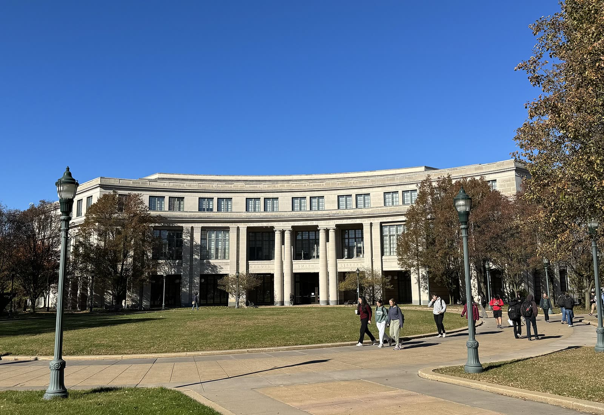

Neural network pruning
Ongoing research

With Prof. Shuai Xu I study how to prune neural networks: removing weights so a model gets smaller and cheaper to run without giving up much accuracy. It is the same question as Story MoE from the other side. Instead of running only part of a large model, make the model itself smaller.
The work is in progress, so there are no results to show yet.